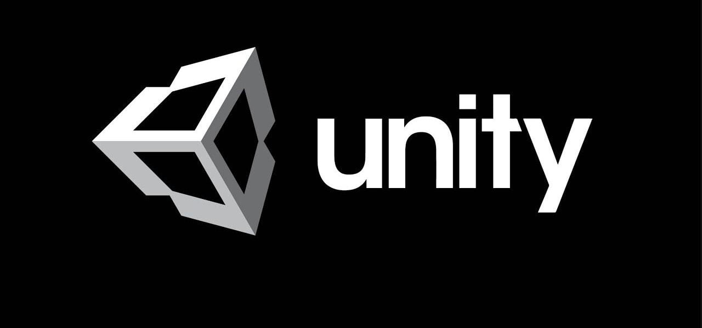
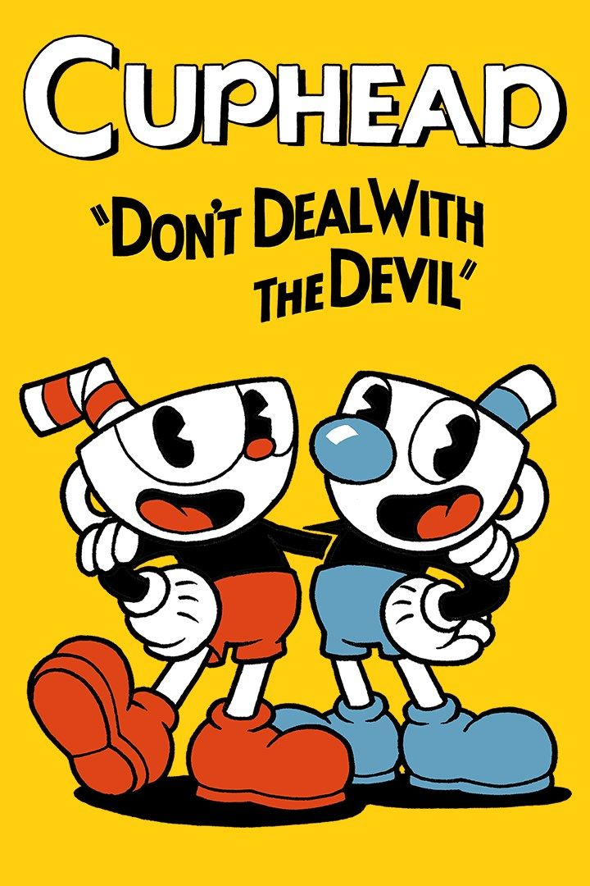
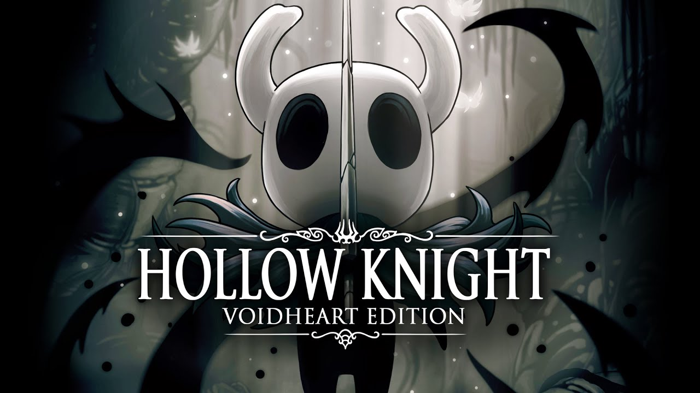

¿Qué es Unity?
Unity es un motor de desarrollo de videojuegos multiplataforma utilizado para crear juegos 2D, 3D, realidad virtual y aumentada, así como simulaciones. Permite programar en C#, renderizar gráficos, gestionar físicas y animaciones en un entorno integrado, siendo popular por su versatilidad y facilidad para publicar en móviles, PC y consolas.
¿Qué lenguajes usa?
Unity utiliza principalmente C# (C Sharp) como lenguaje estándar y moderno. Es un lenguaje potente, orientado a objetos y fácil de aprender. Adicionalmente, Unity ofrece Visual Scripting (programación basada en nodos) y utiliza C++ para la arquitectura interna del motor.
Juegos creados con Unity

